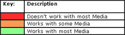
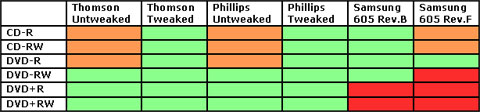

XBOX
DVD & CD-R MEDIA COMPATIBILITY
WHAT DVDS WORK
CD-Rs THAT DO NOT WORK
WHAT CD-RWs WORK
The below guide is the general rule
of thumb when it comes down to Xbox
DVD-ROM(s) reading "blank" media, this isn't always true, there have
been cases where different media will work in different drives, and
different brands of media (i.e. generic, or expensive) will work, and
some won't.
When burning for the Xbox, it has beem recommend Ritek DVD-R for all Xbox DVD-ROM
drives. I read also, do not recommend using used or formatted RW(s) of
any
kind, only new ones. We have had better luck with lower capable speed
media versus newer, faster media. Burning at low
speeds and using Disc at Once (Finalizez the disk) when burning.
Please note that Ritek makes DVD-Rs for Memorex! I have stated
several tmies that I use Memorex 8x DVD-R media and it works just
fine. Seems like Ritek media is the most compatible with Xbox DVD
drives.
Why does the Xbox have a hard time
reading "burned" DVD Media:
The drive "Firmware" is what contains the information on how to read
(handle) certain media types. Anyone who has a Set-Top DVD
Recorder knows that they're constantly updating their machine to be
able to record to different types of media. This is done with a
firmware update. PC DVD drives work the same way. I have a
NEC ND-2510A 8x +/-R/RW DL Recorder that records DVD+/- R media to
8x. I bought Memorex +R and -R media. The -R would not burn
at 8x, that was until I updated the drive's Firmware, so it now knew,
basically, how to "Handle" the media.
With Xbox DVD Drives, there will NEVER, EVER be firmware updates for
the drives. This limits the drives compatibility with tons of
other media that people use to make backups. The drives firmware
is set to recognize PRESSED media (DVD-ROM) for the most part.
This means the drives have a limited compatibility with other media,
and the most common being RITEK media, who makes blanks for Memorex,
Dynex and other dealers. They are also set to recognize Audio
CDs, and some burned Audio CDs. Be aware that Audio CDs, even
blanks, are different than CD-Rs! Those Audio CDs are made
specifically for those Set-Top Audio Recorders.
The SAMSUNG drive is the popular drive, specifically, 605 REV B, as it
works with just about anything. Later, Microsoft Xboxs used a 605
REV F drive, which then was made so it was not compatibile with most
media, again to curb piracy. Most MFGs usually do not BACKWARD
FLASH new drives with old firmware, so a Thompson MFGed in 2004 should
have some updated firmware. I say that because I have a MFG 2004
Thompson, and it reads all my old, and new burned discs.
I personally find that the Specific non-compatibility with burned media
was not an accident. All Xbox Game discs are the same, and have
to be made the same. They could have coded the FIRMWARE in their
DVD drives to only work certain media brands, or book-types, which
would be rejected at the drive. This would also prevent an
alternate bios to bypass the media byte, ot book-type check. This
would have lead to more problems with Audio CDs though. You can
use bit-setting to change a media intentifier from DVD+-R to DVD-ROM
and it works most of the time for reading the disc.
SMALL COMPATIBILITY
CHART BY XBOX DVD DRIVE:
"Tweaked" means adjusting the laser intensity, which is a trial and
error, one disc at a time process.


Phillips Drive:
Reads very few CD-R
Reads some (generally slower speed) CD-RW
Reads DVD-R/RW
Reads some DVD+R/RW
Thomson Drive:
Will not read CD-R
Reads very few (generally slower speed, Memorex) CD-RW
Reads DVD-R/RW
Reads DVD+R/RW
Samsung Drive:
Reads some CD-R/RW
Reads DVD-R/RW
Reads very few DVD+R/RW
Hitachi Drive:
Will not read CD-R
Reads Most DVD-R
Reads Some RW Media
Reads Some DVD+R
Please be aware that there are exceptions to every rule, and that the
Xbox DVD drive falls true to this. Some drives will differ from above,
but there are the exceptions. This is simply a general rule
derived from testing different DVD drives during modding. If your
xbox reads other then what is posted good for you, it is a rare one so
hang on to it!
I use RITEK (Memorex) Media, and that has seemed to work for me.
So what about CDR and RW?
Well CDR is a known non-working media, and 90% of the new xbox comers
want to use CD-RW. But there is a trick to it all. With CD-RW not many
Brand named CD-RW's will work with your xbox that well. A list of known
working CD-RW's is listed as:
1. Imation
2. Memorex
3. TDK
When or if you plan on using CD-R/RW, you should consider making the cd
above 20 megs. You need to make the xISO directory of the program you
wish to burn, then go ahead and burn it at a slow speed of no more then
4x.
What CD-R's don't work in the Xbox?
| Type |
Model |
Type |
Speed |
| Acer |
650mb/74min |
CD-RW |
4x |
| CompUSA |
650MB/74min 8x capable |
CD-R |
4x |
| Fujifilm |
700MB/80min |
CD-R |
24x |
| Fujifilm /HP9300burner |
650MB/74min 4xcapable |
CD-RW |
4x |
| Gigastorage 700MB |
upc 686354292010 |
CD-R |
4x |
| High Tech |
80 min 700mb |
CD-R |
16x |
| Imation |
700MB/80Min |
CD-R |
16x |
| Imation |
650MB/74min |
CD-R |
8x |
| Memorex |
White & Gold |
CD-R |
4x |
| Memorex |
700MB/80min |
CD-R |
8x |
| PNY |
650MB |
CD-RW |
8x |
| Sony |
650MB/74Min |
CD-RW |
4x |
| Verbatim |
700mb green bottom |
CD-R |
24x |
| Verbatim |
700MB/80Min |
CD-R |
16x |